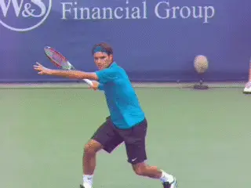
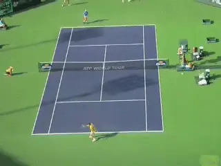
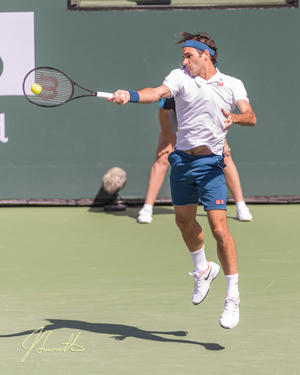
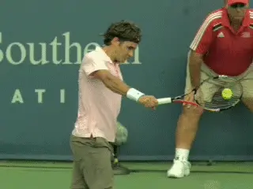
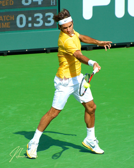
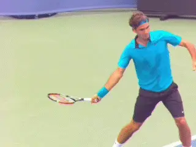

Previous: 1-2 Rhythm on the Two Hander | 🏠 Classic Lessons Home | Next: Ball Watching - Part 2
Ball Watching - Part 1
Comprehensive unified tennis knowledge base — Fundamentals, Stroke Analysis, Reference Library, and more
Ball Watching - Part 1
Paul Hamori, MD

Roger Federer: the greatest ball watcher of the modern era.
The quintessential, sine qua non of good tennis is good racket to ball contact. And good ball contact hinges upon correct, consistent ball watching.
Of the many great champions I've studied, there are many great ball watchers. I have seen Roger Federer play live more than forty times. His ball watching ability and technique stand out even among other greats.
There's no doubt in my mind that Roger Federer is the greatest ball watcher of the modem era. I believe ball watching has been pivotal to Federer's success and popularity.
Because he is the best example of great ball watching, I decided to study Roger Federer's technique in depth. I took an evidence-based approach by studying over 1500 Federer photographs and tried to discern objectively what he is doing during ball watching.
But what do we mean by ball watching? The scientific fact is that racket to ball contact cannot be truly seen because it is too rapid for the human nervous system to process in real time. However, I believe it can be perceived within the limits of nerve transmission speed. And better perception of contact translates to better contact.
The Hitting Cycle
There's a certain rhythm to a tennis rally. In play, you hit the ball and it travels to your opponent's side of the court. Then your opponent hits the ball, and it travels back to your side, at which point you're ready for your next hit. I call this length of time between one of your shots and the next the hitting cycle.

The hitting cycle: about 2 seconds.
The hitting cycle is approximately two to three seconds long. But it can vary depending on the speed of the ball. For simplicity's sake I've used a length of two seconds in my calculations. After you hit the ball, it travels for about one second until your opponent hits it, at which point it travels an additional one second before you are ready for your next hit.
Since contact takes only 5 milliseconds or less, it takes up only half of one percent of the hitting cycle. That means that over 99% of the hitting cycle is ball travel. What you do in this time is critical to your best performance.
Light and Sound
The speed of light is 672,478,206 miles per hour, meaning that light travels almost instantaneously. The speed of sound is 750 mph, also very fast, although orders of magnitude slower than light. While the light from contact reaches your retina immediately, the sound of contact reaches your ears in 3.6 milliseconds.
Light travels much faster than sound, but our ability to hear at distances less than 25 feet is actually faster than our ability to see. How is that possible?

You hear contact before you see it.
Sight is a slower internal process because light must be converted to electrical energy via a chemical reaction on the retina before it can travel its pathway from the eye to the visual cortex. This is slower than the mechanical reaction of sound travelling through the ear.
Sound takes only about 50 milliseconds to travel from your ear to your brain. But light can take hundreds of milliseconds to process. This means you hear contact before you see it.
Since contact takes place in approximately about 5 milliseconds, this is still shorter than the processing time for either hearing or vision. This means contact has already taken place by the time you hear it or see it.
So, the truth is it’s impossible to truly see or hear contact in real time. I believe, however, that with proper technique and training one can learn to get as close as possible to "seeing" racket to ball contact. Perceiving contact might be a better way to phrase it.
I also believe the subtle difference in the speed of hearing and vision can be used to one's advantage in ball watching.
Blindness in Tennis
In our daily lives, we think of vision as a continuous sensory modality. In reality, however, it actually occurs in discrete intervals separated by intermittent moments of blindness.
Every time we move our eyes, there is a short blackout to prevent blurring of vision as the eyeballs move. These small, essentially imperceptible blackouts are the result of what are call saccadic eye movements.

Saccadic eye movements cause short blackouts.
These occur when we move our eyes without moving the head. These saccadic movements are very smooth and very rapid and can happen up to five times or more per second.
Every time we move our eyes in a saccadic movement, our visual processing system blocks our vision to prevent blurring while our eyes are in motion. The brain fills in these gaps with what it expects to see.
So vision appears to be continuous with no blackouts. These brief periods of blindness add up to approximately eleven minutes in a two-hour tennis match.
This means that on average, saccadic eye movements produce visual blackout in 9% of a two-hour match, or perhaps even more than that depending on how much eye motion occurs during play for a given player.
Additionally, we all blink up to 1,200 times per hour. A blink takes 200 milliseconds, or roughly one fifth of a second. This comes out to four minutes of additional blindness per hour and eight minutes in the average tennis match.
Combined with the small moments of blindness that occur during jump saccades, each tennis player is subject to roughly nineteen minutes of blindness per match. We don't notice the vision loss caused by blinking or saccadic eye movements because our brains have learned to disregard these periods of temporary blindness.

It is technically impossible to "see" contact.
The brain fills in the gaps with what it expects to be seeing. The gaps don't bother us at all. However, it is physiologically impossible to "always keep your eye on the ball." Your brain simply won't allow it.
So can we see contact? Technically, no. We do not perceive contact in real time, but in delayed perceptual time. This might lead someone to the conclusion, "Why bother?" However, the closer we get to perceiving contact, the better we will get at making adjustments that ultimately influence the contact event.
The Art of Ball Watching
New thinking is often counterintuitive to conventional wisdom. I am going to recommend techniques that in my day would have been tennis heresy. For example, rather than telling you to "keep your eye on the ball," I recommend that you purposefully take your eye off the ball at certain points of the hitting cycle. Take your eye off the ball in order to put it back on the ball at the contact.
As I said, I have seen Federer play live more than forty times, and his techniques formed the basis for my initial hypothesis on ball watching. I also watched some film of Federer between the ages of eight and sixteen on YouTube, and his ball watching technique was firmly in place by then.
Certain actions were consistent across all the groundstrokes: footwork, upper body preparation, the final stance, looking over the leading shoulder at the incoming ball, and turning the head to the hitting side at the last second leading into contact, then keeping the head sideways into the follow-through.

Federer turns his head to the hitting side in the split second before contact.
This analysis is based on watching Roger Federer practice for approximately four hours (2 hours on each of 2 consecutive days), while taking photographs nonstop with the burst feature on a DSLR camera. I analyzed a total of 1,500 photos, which translated to approximately 300 separate shot sequences. The pictures were aimed at eye movements and head movements rather than shot mechanics.
So how do Federer’s eye and head movements apply to the seeming impossibility of seeing contact? Stay Tuned!

I began writing the book that is the basis for this article - The Art and Science of Ball Watching - in August of 2019 and finished it in January of 2021. In a sense, though, I have been working on it since I started playing tennis fifty-five years ago at the age of five. In high school I played four years of varsity tennis in addition to sanctioned USTA junior tournaments. I probably reached a 4.5-5.0 level. I considered playing small college tennis, but by then I was burned out on the sport, and knew that my pre-med studies wouldn't allow time for college tennis.
But tennis was in my blood, and I started playing again with a passion after medical school. During this time, I really started to study the technical aspects of the game.
My idea for the book started out with various technical ideas that I had been kicking around by watching great players over several generations. In the end I came to the conclusion that good racket to ball contact depends on good ball watching. I wrote the book to teach myself how to see racket to ball contact and my hope is it can help you do the same.
Source: tennisplayer.net archive — Ball Watching - Part 1 .docx (John Yandell teaching library, 2002-2022). Extracted and rendered as HTML for Tennis Future Lab.